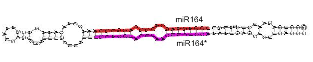
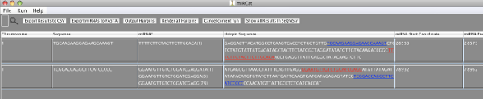
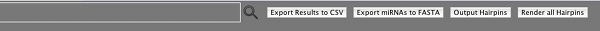
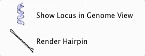

The miRCat Tool
miRNAs are a well-studied class of sRNAs that are generated from a single-stranded RNA (ssRNA) that forms a stable, partially double stranded stem-loop structure (hairpin). miRCat predicts miRNAs from high- throughput sRNA sequencing data without requiring a putative precursor sequence as these will be identified by the program.
miRCat projects are created by entering the new project menu which is found under the file menu.
Once the sequences are mapped to the input genome, miRCat will look for genomic regions covered with sRNAs (sRNA loci), containing reads with abundance at least five (this threshold can be adjusted using the Min sRNA Abundance parameter).
These loci must match certain criteria:
- Each sRNA in a locus must be no more than 200nt away from its closest neighbour (this threshold can be adjusted using the Loci Separation Distance parameter).
- At least 80% of sRNAs in a locus must have the same orientation (this threshold can be adjusted using the Min sRNA Orientation orientation parameter).
Once a list of loci has been produced, it is further analysed in order to find likely miRNA candidates:
- The most abundant sRNA read within a locus is chosen as the likely miRNA. (each sRNA is tested for its GC content as a percentage, adjusted with the Min GC parameter)
- Flanking sequences surrounding this sRNA are extracted from the genome using varying window lengths. (The flanking length can be adjusted with the sRNA Sequence Flank Extension parameter
- Each sequence window is then folded using RNAfold, producing a secondary structure for the putative miRNA that can then be viewed using the Hairpin Annotation Tool
- miRCat then trims the secondary structure and computes discriminative features useful for classifying miRNAs.
The features are:
- The number of consecutive mismatches between miRNA and miRNA* must be no more than 3 (adjusted with the Max Consecutive Gaps parameter).
- The number of paired nucleotides between the miRNA and the miRNA* must be at least 17 of the 25 nucleotides centred around the miRNA. (Adjusted with the Min Paired Bases parameter)
- The hairpin must be at least 75nt (for plants) or 50nt (for animals) in length. (adjusted with the Min Hairpin Length parameter
- The percentage of paired bases in the hairpin must be at least 50% of base-pairs in the hairpin (this threshold can be adjusted using the Max Unpaired Bases parameter).
- The hairpin with the lowest adjusted minimum free energy (AMFE) from the sequence windows is then chosen as the precursor miRNA (pre-miRNA) candidate
- The pre-miRNA candidate is then tested using randfold using a AMFE cutoff.

Hairpin Annotation Tool output showing miR164 precursor.
Parameters:
All the following parameters can be adjusted using the paramter browser window.
- Max Genome Hits: The maximum number of genome hits. (1 > genomehits, default genomehits = 16).
- Loci Seperation Distance: The maximum distance between consecutive hits on the genome. (hit dist, default hit dist = 200).
- Max Consecutive Gaps: The maximum number of consecutive unpaired bases in miRNA region. (0 > max gaps < 5, default max gaps = 3).
- Maximum Overlap: The maximum total percentage of miRNAs that lie under the miRNA or miRNA* position on the hairpin. (30 < max overlap length, default = 80).
- Max Unpaired Bases: The maximum percentage of unpaired bases in hairpin. (1 < max percent unpaired < 100, default max percent unpaired = 50).
- sRNA Sequence Length - Max: The maximum length of a miRNA. (18 < maxsize < 36, default maxsize = 22).
- sRNA Sequence Length - Min: The Minimum sRNA size (Must be > 18 and < 36. Default = 20).
- Min sRNA Abundance: The minimum sRNA abundance. (1 < min abundance, default min abundance = 1).
- Minimum Free Energy Threshold: The adjusted minimum free energy of the hairpin. Must be < 0. Default = -25.
- Min GC: The Minimum percentage of G/C in miRNA (must be > 1 and < 100. Default = 10).
- Min Hairpin Length: The minimum length of hairpin (nt) (must be > 50. Default = 75).
- Min Paired Bases: The Minimum number of paired bases in miRNA region (Must be > 10 and < 25. Default = 17).
- Allowing complex loops: This will allow or remove any hairpins containing complex loops.
- Orientation percentage: The percentage of sRNAs in locus that must be in the same orientation (1 < percent orientation < 100, default percent orientation = 90).
- Hairpin Extension: How much each hairpin should extend past the sRNA read to form the window (40 < window length < 400, default window length = 150).
- P_Val: The P_Val for the predicted structure as calculated by randfold (default P_Val = 0.5).
During the analysis procedure the results are entered into the table as shown below:

The table contains the following information:
- Chromosome
- Start position
- End position
- Strand/orientation
- Abundance (number of times sequenced in high-throughput dataset)
- Sequence of predicted mature miRNA
- Representative sequence accession from input dataset
- Length of predicted mature miRNA
- Number of matches to genome
- Length of predicted precursor hairpin sequence
- G/C % content of hairpin sequence
- Minimum free energy (MFE) of predicted hairpin sequence
- Adjusted MFE, AMFE = (MFE / length of hairpin) * 100
- Shows MFE per 100nt making results comparable
- miRNA* shows predicted miRNA* sequence(s), if any, along with abundance in input dataset shown in brackets
- Hairpin Sequence (with miRNA sequence highlighted in blue and miRNA* if present in red)
- Hairpin Dot-Bracket notation
- Hairpin start position
- Hairpin end position
- miRNA* start position, if present
- miRNA* end position, if present
- miRBase ID, if present
A user has the option to interact with the results in real time in several aspects. Using the Export menu a user can export the results to file. A user can also use the controls shown at the top to output the results as they are generated to file or pipe all results into into either the RNA Folding/Annotation tool or the VisSR tool.

Additionally a context menu has been included to allow the user to pipe a single result line into two other tools in the sRNA Workbench.

This image demonstrates the VisSR output from miRCat, users are presented with the GFF style view in one tier and the entire miRNA locus in another:
Both options operate on the currently selected result line. 'Render Hairpin' will render the selection in the Hairpin Annotation tool, while 'Show in Genome View' will display the selection in VisSR.